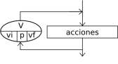

Lazos Para

La instrucción Para ejecuta una secuencia de instrucciones un número determinado de veces.
Para <variable> <- <inicial> Hasta <final> Con Paso <paso> Hacer
<instrucciones>
FinPara
Al ingresar al bloque, la variable <variable> recibe el valor <inicial> y se ejecuta la secuencia de instrucciones que forma el cuerpo del ciclo. Luego se incrementa la variable <variable> en <paso> unidades y se evalúa si el valor almacenado en <variable> superó al valor <final>. Si esto es falso se repite hasta que <variable> supere a <final>. Si se omite la cláusula Con Paso <paso>, la variable <variable> se incrementará en 1.
Si se habilita la sintaxis flexible en las configuración del lenguaje se pueden utilizar dos alternativas. La primer variante consiste en reemplazar el operador de asignación por la palabra clave Desde:
Para <variable> Desde <inicial> Hasta <final> Con Paso <paso> Hacer ...
De esta forma, la lectura de la sentencia resulta más obvia. Además, con sintaxis flexible, si no se especifica el paso pero el valor final es menor al inicial, el bucle recorrerá los valores en orden inverso como si el paso fuera -1. La segunda variante solo sirve para recorrer arreglos de una o más dimensiones. Se introduce con la construcción Para Cada seguida de un identificador, la palabra clave De y otro identificador:
Para Cada <elemento> De <Arreglo> Hacer ...
El segundo identificador debe corresponder a un arreglo. El primero será el que irá variando en cada iteración. El ciclo realizará tantas iteraciones como elementos contenga el arreglo y en cada uno el primer identificador servirá para referirse al elemento del arreglo en cuestión.
El ejemplo Promedio utiliza un bucle de este tipo para leer N valores numéricos con los cuales calcula un promedio.
El ejemplo Para utiliza las tres variantes de este tipo de bucles para recorrer un arreglo.